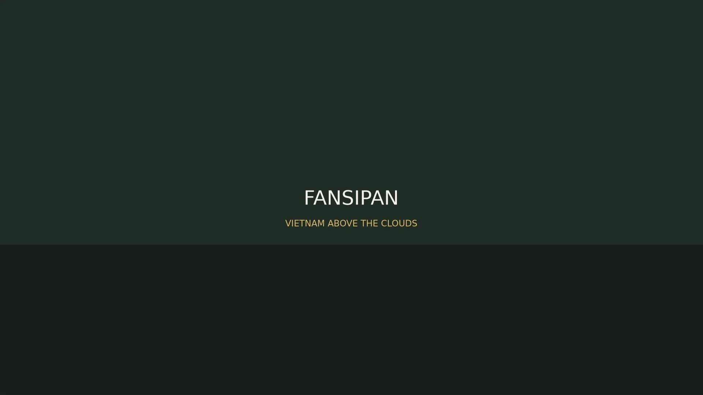
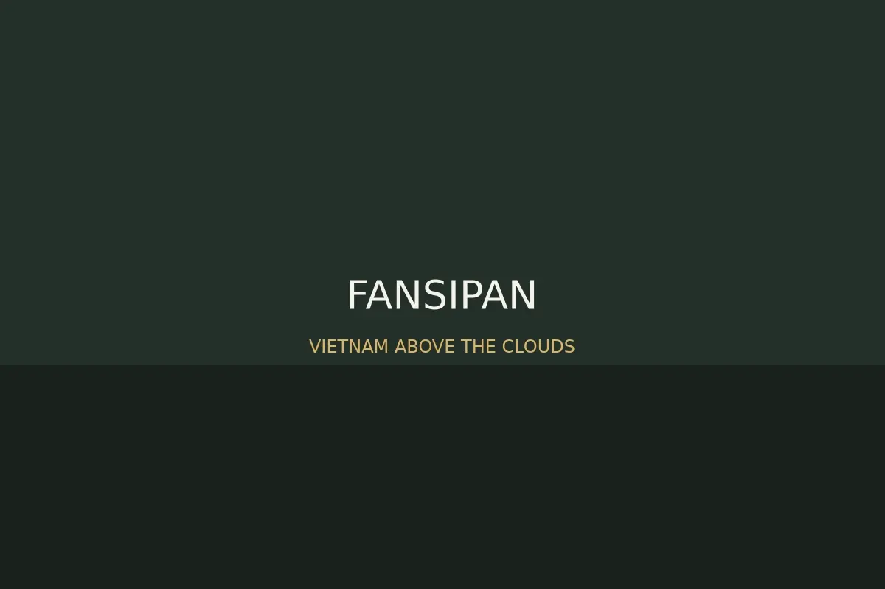
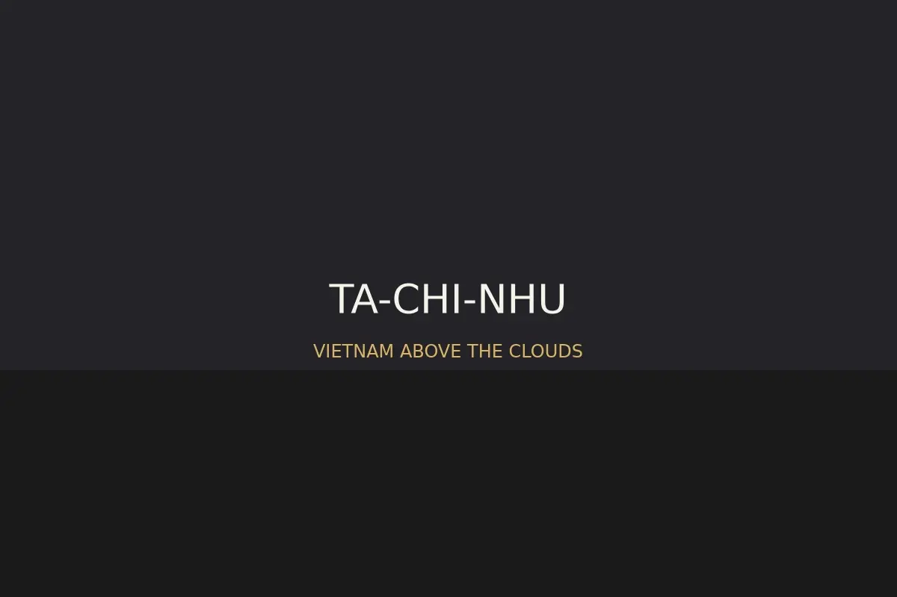
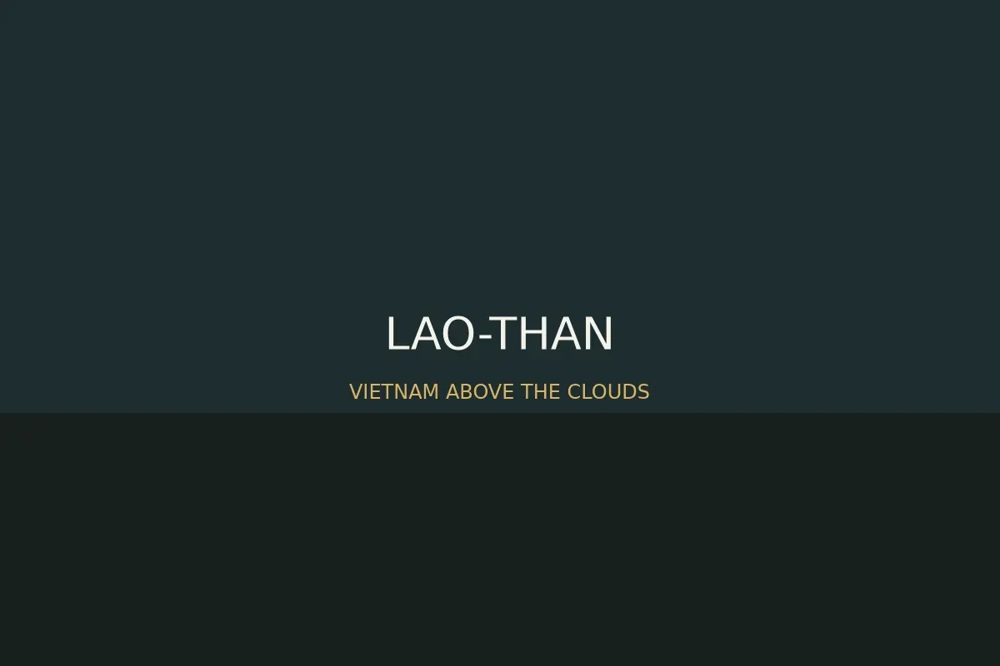

Fansipan
Biểu tượng cao nhất, phù hợp cả trekking lẫn du lịch cáp treo.

5 đỉnh núi đáng chinh phục nhất Việt Nam
5 đỉnh núi. 5 tính cách. 1 hành trình chạm mây.
Khám phá những cung đường nơi thiên nhiên, văn hóa và thử thách gặp nhau trên các đỉnh núi biểu tượng của Việt Nam.
Không chỉ là xếp hạng
Có người tìm kiếm đỉnh cao. Có người tìm biển mây. Có người đi tìm lịch sử. Có người chỉ muốn nhìn thấy bình minh phía trên những đám mây.
Mountain selector
Biểu tượng cao nhất, phù hợp cả trekking lẫn du lịch cáp treo.
Không gian văn hóa, lịch sử và tâm linh giữa rừng núi.
Biển mây, hoa Chi Pâu và những sườn núi giàu chất thơ.
Cung đường cho người muốn thử sức với rừng sâu và bình minh Núi Muối.
Cánh cửa thân thiện để bắt đầu trekking, cắm trại và săn mây.

3.143 m
Một biểu tượng vượt khỏi khái niệm trekking. Fansipan là nơi núi, mây và rừng Hoàng Liên Sơn hội tụ trên nóc nhà Đông Dương.
1.068 m
Yên Tử tạo chiều sâu khác biệt cho hành trình: không chỉ đi lên cao, mà còn đi qua rừng, chùa, tháp và các lớp lịch sử của thiền phái Trúc Lâm.

2.979 m
Tà Chì Nhù có vẻ đẹp mộng hơn là dữ dội: biển mây trắng, triền núi rộng và mùa hoa Chi Pâu nhuộm tím những cung đường Tây Bắc.
3.046 m
Còn được biết đến với tên Bạch Mộc Lương Tử, Ky Quan San là hành trình của sức bền, rừng sâu, sống núi và khoảnh khắc bình minh trên Núi Muối.

2.860 m
Lảo Thẩn là cánh cửa dễ tiếp cận hơn vào thế giới trekking Tây Bắc: săn mây, cắm trại và đón bình minh trong một chuyến đi vừa sức.
Altitude journey
Find your mountain
Gallery
Đỉnh núi không phải điểm kết thúc. Nó là nơi bạn nhìn lại quãng đường mình đã đi qua.
Trở lại đầu hành trìnhAbout me
Linux Software Developer
Tôi quan tâm đến Linux, hệ thống nhúng, smarthome và các giải pháp trợ lý ảo có thể hỗ trợ con người trong đời sống hằng ngày. Với nền tảng phát triển phần mềm trên Linux, tôi yêu thích việc xây dựng những hệ thống ổn định, dễ mở rộng và có khả năng kết nối giữa phần cứng, phần mềm và trải nghiệm người dùng.
**************
**************
**************